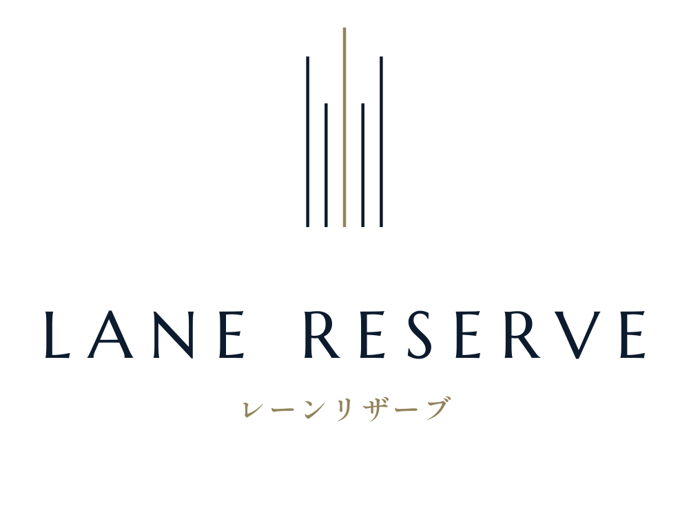

<!doctype html><meta charset="utf-8"><title>レーンリザーブ ロゴ</title>
<style>body{margin:0;font-family:sans-serif;background:#f4f7f7;color:#123}section{padding:32px;display:flex;gap:40px;align-items:center;flex-wrap:wrap}.dark{background:#0f3d42}img{display:block}p{margin:8px 0 0;font-size:13px;color:#567}.dark p{color:#9fe3d9}</style>
<section><div><p>横組み（白い背景）</p></div><div><p>マークだけ（アプリのアイコン・ファビコン）</p></div><div><p>32px</p></div></section>
<section class="dark"><div><p>横組み（濃い背景）</p></div></section>
